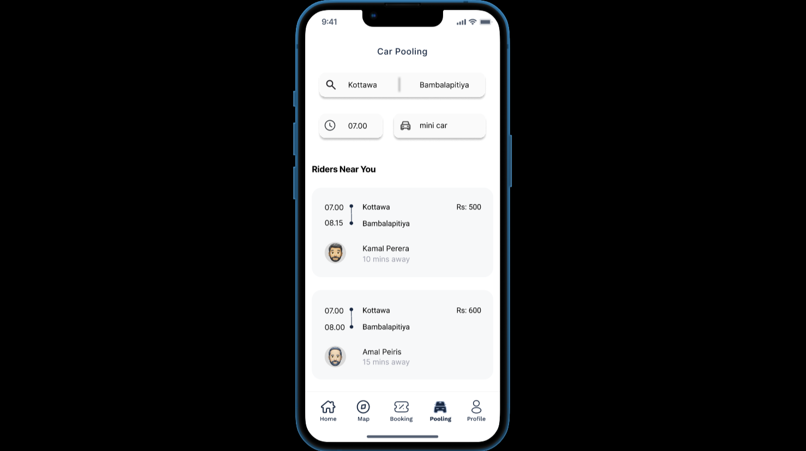
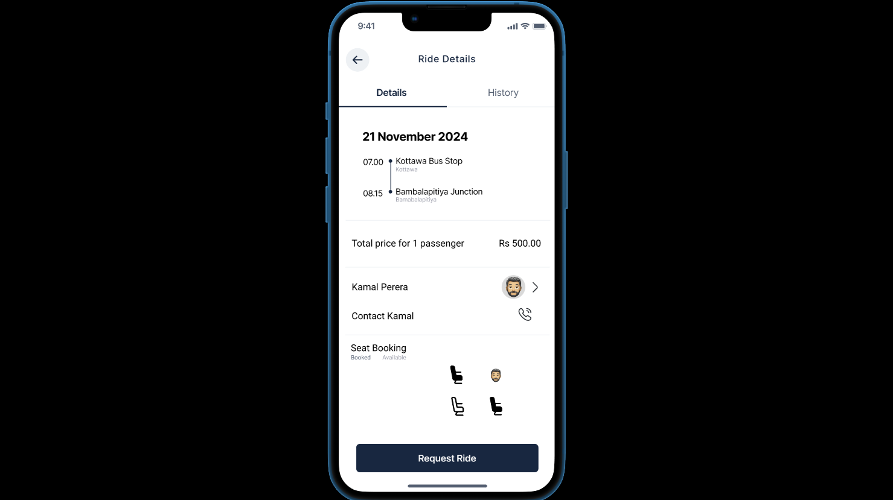
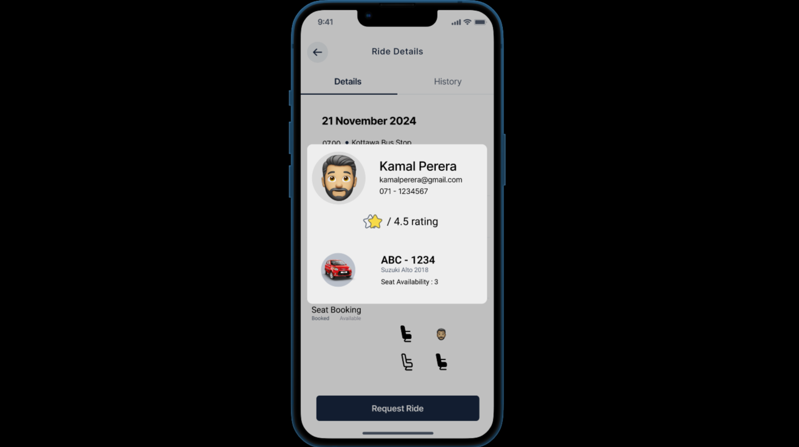
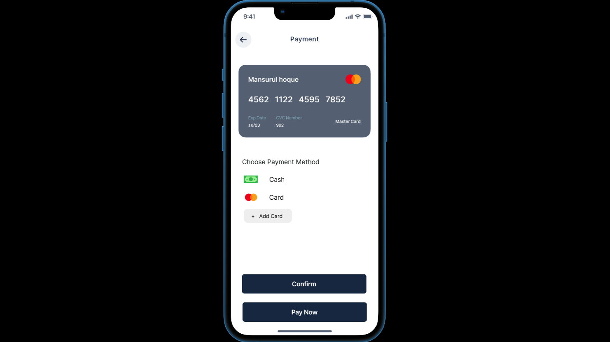
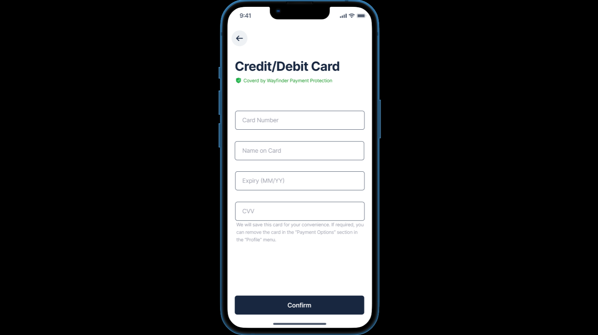
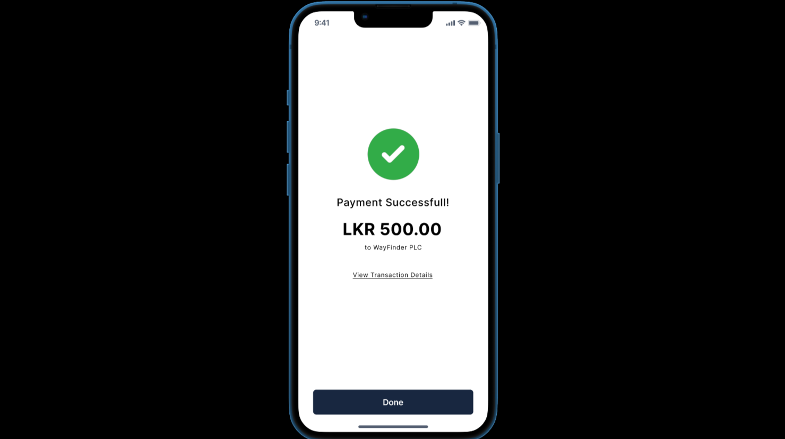
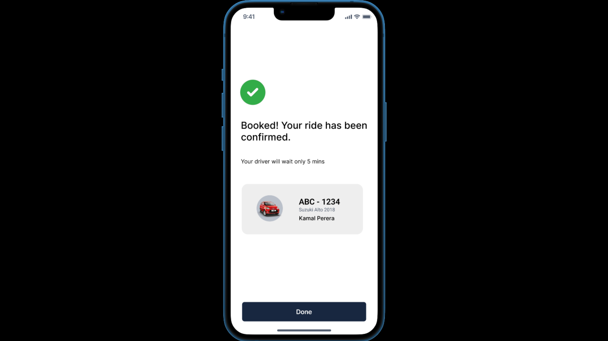
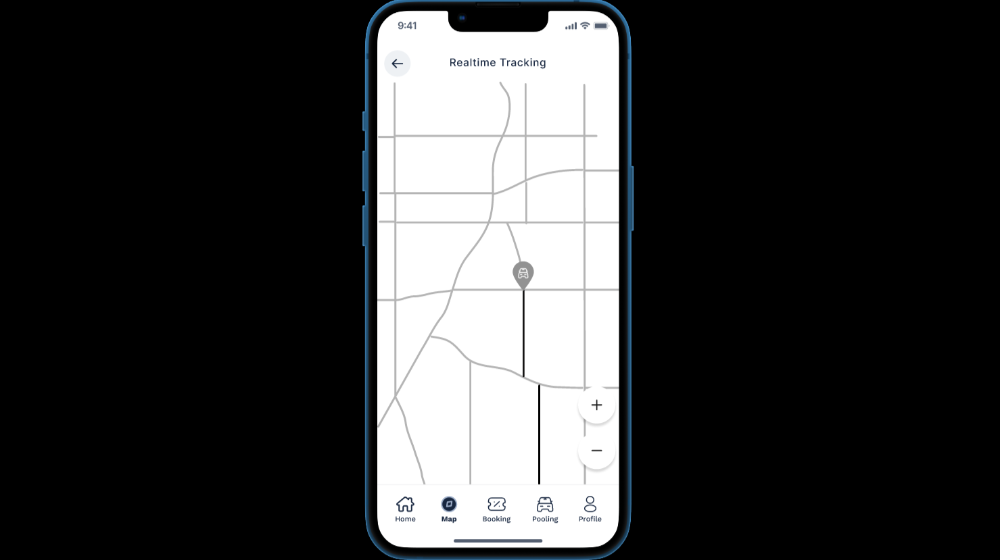
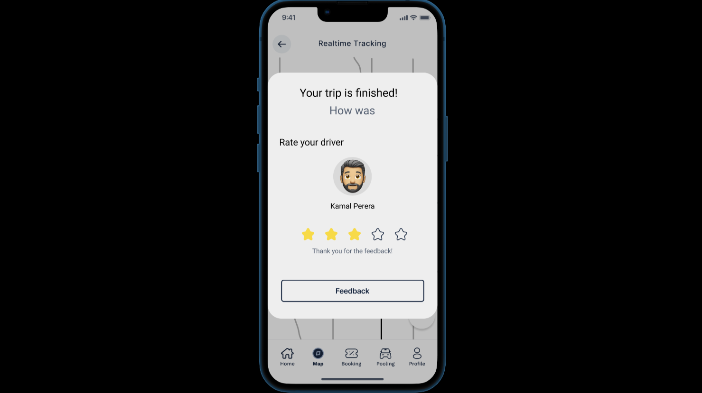
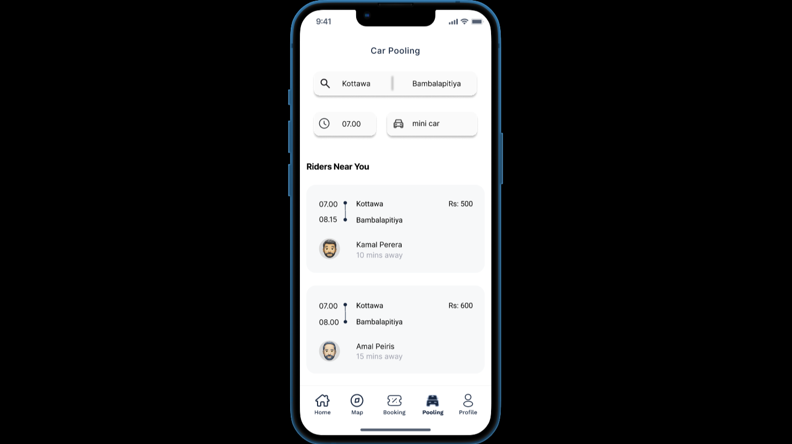
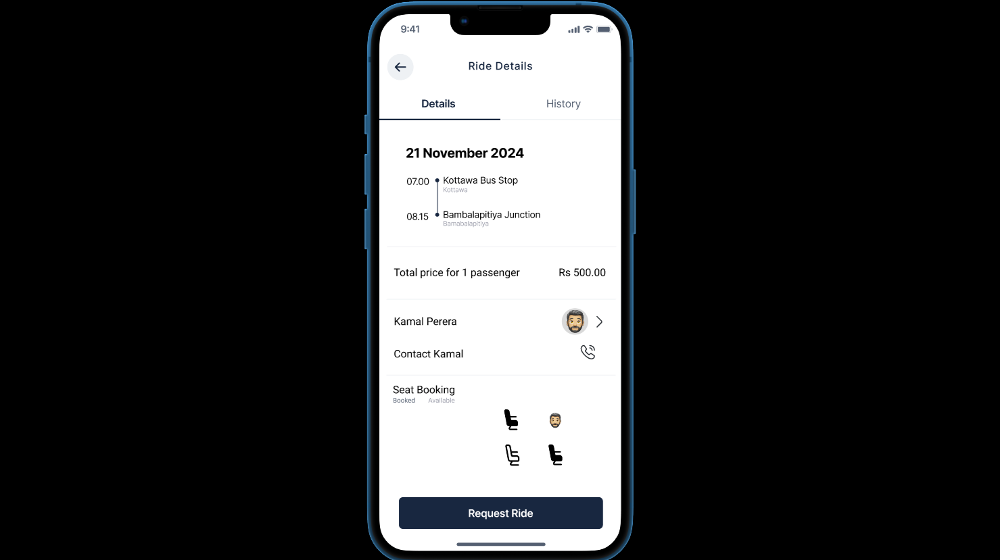
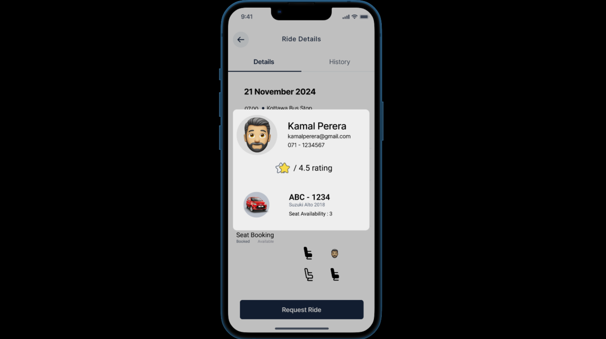
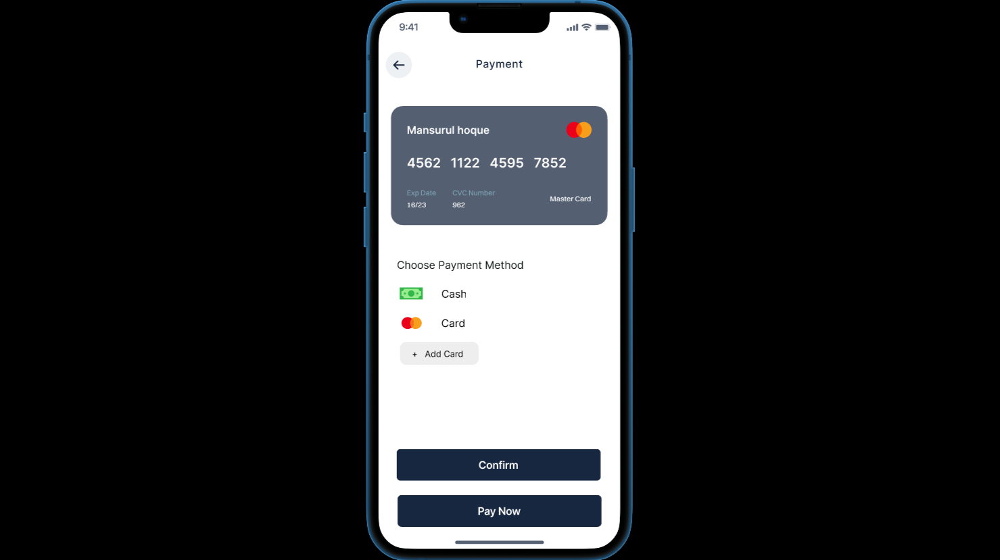
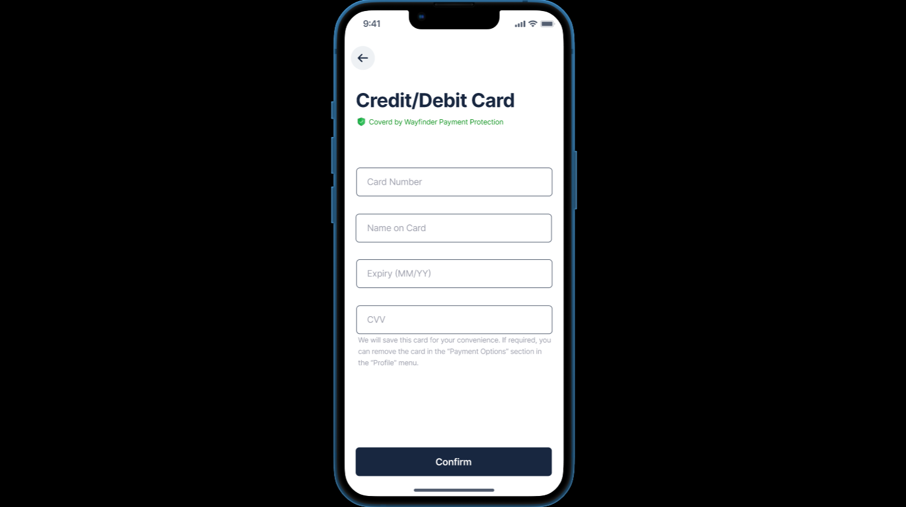
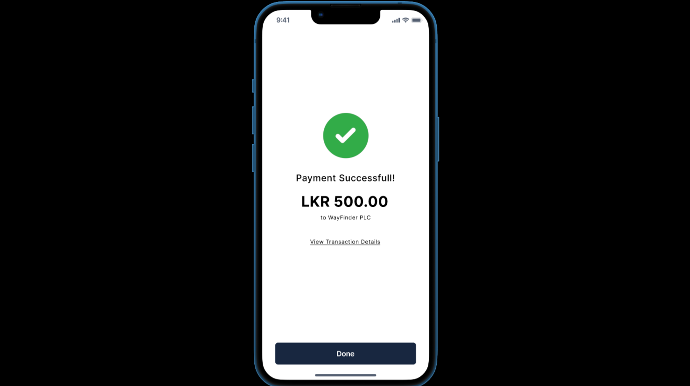
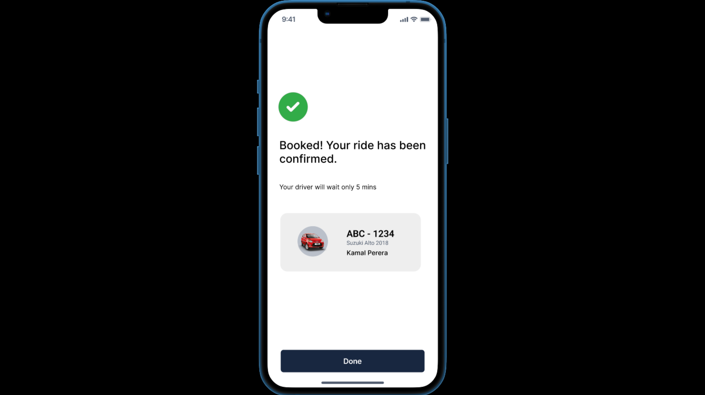
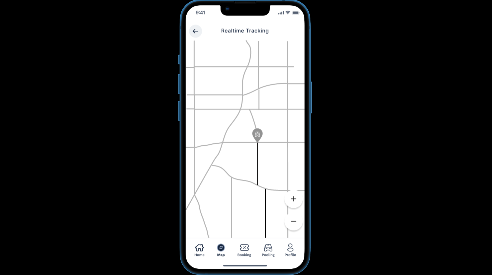
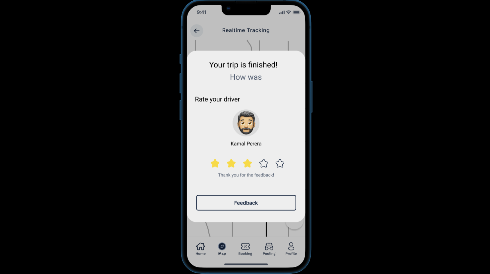
This is a UI design for a Carpooling System. It includes key features like route selection, booking interface, and smart search. The UI was designed with mobile responsiveness in mind, ready for backend integration. CW1 was a group project, where we worked on the low fidelity design and prototype. CW2 was an individual task where I created the high fidelity design and prototype for the Carpooling feature.